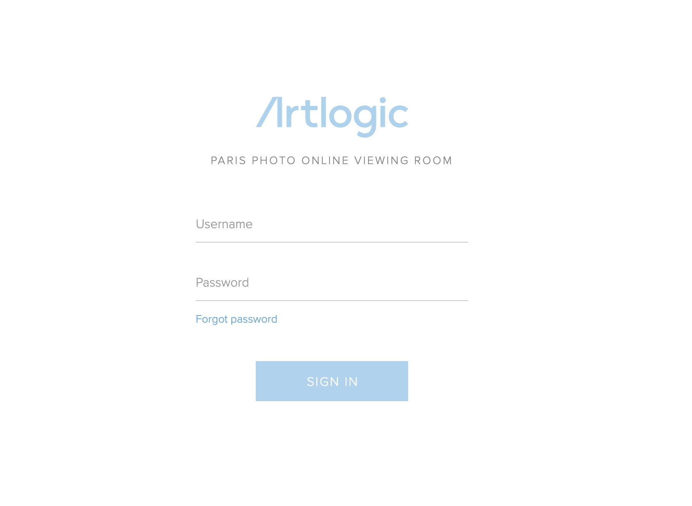
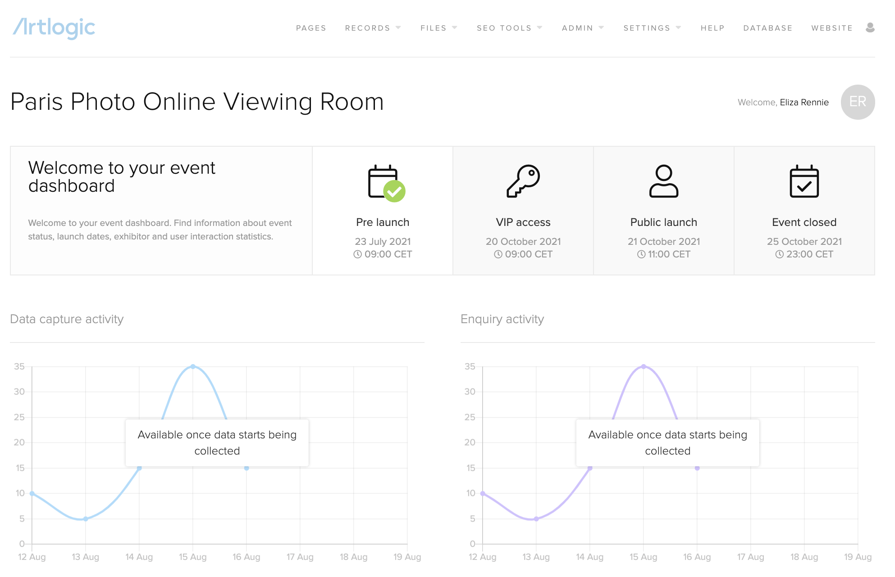
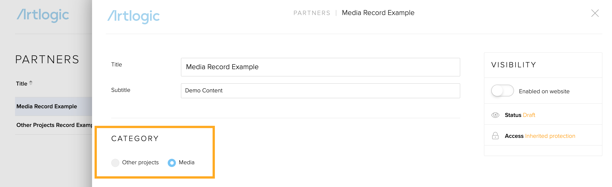
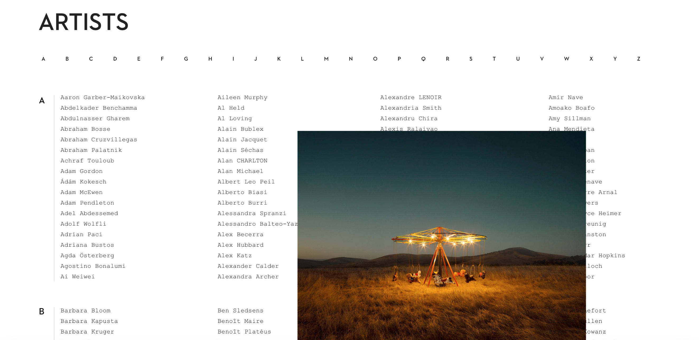
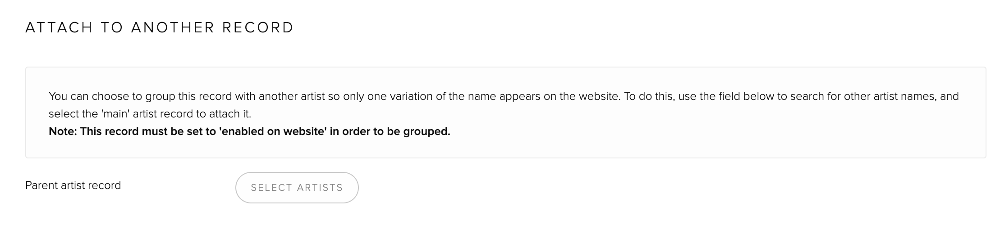
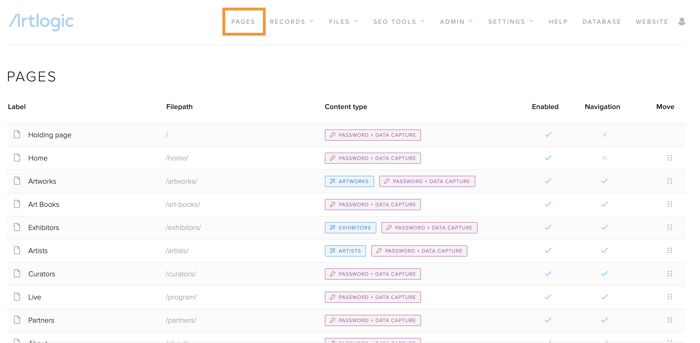
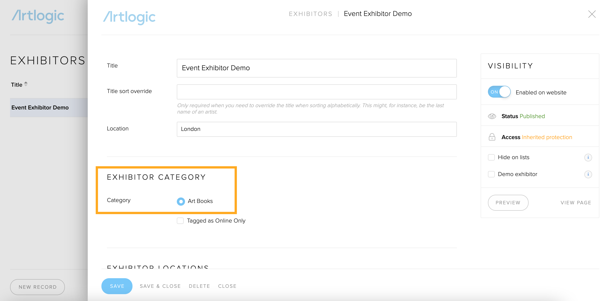

Step 1: Logging In
- To login, go to: https://website-parisphoto2022.artlogic.net/admin/
- You'll arrive on the Login page:
- Enter your Username and Password.
- Sign In.
You can use the 'forgot password' link below to reset your password. Equally an Admin user on the CMS can also adjust this for you.
Users & Security
As fair organisers you can add, set up, and manage user accounts for your team in the CMS by going to Admin > Users. We recommend that you appoint one person to be the dedicated Admin user for setting up the rest of your teams users. To find out more about adding users and changing permissions click here.
Using the System Collaboratively
For large organisations, we recommend outlining a formal process for adding and editing content within the CMS. If more than one user is editing a page or record at the same time on different devices, they will overwrite each others changes and content will be lost. It will be important to ensure you have a process for who is editing each page and at what time to avoid this.
Using Your CMS Dashboard
Your CMS dashboard can be reached at anytime by clicking the 'Artlogic' logo in the top left hand side of the screen. Your dashboard is a useful place to view key dates and deadlines as well as to get an overview of the content that is being uploaded by exhibitors in their databases. Please note your CMS dashboard will not include any data until exhibitors begin uploading content.

Step 2: Adding & Editing Content
Content that needs to be added by the event organiser should be added at the same time as content is being uploaded by the exhibitors via the exhibition databases. Content can be added and edited in the CMS by event organisers in both the CMS records and CMS pages sections.
Records
-
Exhibitor Records
Exhibitor records in the CMS control the content for each exhibitor page on the event website as well as any location across the site where an exhibitor list is visible. They also act as the connection point between each individual exhibitor database and the CMS, allowing the exhibitors content to be pulled through to the website. To find out more about adding and editing exhibitor records click here. -
Events Records
The event records are directly linked to the 'Live' page of your site, and can be used in multiple sections of the site including the holding page and homepage, so it is key that the records are comprehensive and up to date to ensure content is correct across the site. To find out more about how to add and edit events records click here. -
Curated Edits Records
Curated records in the CMS are connected to your 'Curators' page. To find out more about how to add and edit curated records click here. To find out more about how curators can select artworks and how artworks can be added to curated records click here. -
Partner Records
Partner records in the CMS are where you can add partners (or sponsors) who are associated with the fair. This record will form the basis for the placement of partner details on the holding page, homepage, and the order of partners on the partner page. You'll be able to select where the record should sit, using the category in the record itself. Then pull the correct records through to the page using Feature panels. To find out more about how to add and edit partner records click here.

It is important to note that the CMS has many elements which are standardised for Events [ie. the title of the records, as seen above]. This means that records in the backend may have more generic names, e.g. Events in the backend, is correctly labelled 'Live' on the front of the site. Or, Partner records in the backend, will be sorted into the correct categories for Media and Official Partners.
- Artists Records
Artist records will be created automatically in the CMS when a gallery shares their artworks through to the CMS. These records will the automatically populate the Artists page like so;

However, it will be important to keep an eye out for duplicate records where different galleries are sharing artwork from the same Artist. To resolve duplicates, you can choose to group a record with another artist so only one variation of the name appears on the website. To do this, use the field below to search for other artist names, and select the 'main' artist record to attach it.

Artworks can be shared through to the OVR by galleries throughout the live event, so you'll need to check this Artists page regularly to ensure they're no duplicates.
Pages
All pages can be viewed by going to the 'pages' section of the CMS
Holding Pages
The holding page has multiple versions that will be published throughout the duration of the build-up to the opening of the fair. The holding pages are catalogued by number i.e preview 1, preview 2 and preview 3 (ie: https://website-parisphotonovember2021.artlogic.net/?_cmspreview=1). The content on this page is populated by the exhibitor records, curator records and programming records, so all content should be added in the records section. Artlogic must launch all versions of the holding page, so please indicate the date and times for launch of the exhibitor list, curator list and programme list.
Homepage
This is different to the holding page however they do look similar, so it is important to understand which page you are editing. The main differentiator is that on the homepage the navigation appears, and links become clickable, whereas on the holding page, these are not visible. The content on this page is populated by the exhibitor records, curator records and programming records, so all content should be added in the records section. The homepage will be launched by Artlogic on the set date for VIP and public launches.
Artworks Page
This will populate automatically from exhibitor databases. The event organiser does not need to enter anything here in order for this page to be populated. The filters on this page (ie. Prints, Photography etc) have been pre assigned by the fair organiser and cannot be changed. This is due to the fact that filters have been assigned by exhibitors in their individual databases, as well as being automatically set by the website. Artworks will only appear here once exhibitors have shared their page through from their database.
Exhibitors Page
The Galleries page is populated automatically from the Exhibitor Records. The event organiser does not need to enter anything here in order for this page to be populated.
Art Books Page
The Art Books page will be populated by the Exhibitor records as you create them and assign them to the Art Books category. You can edit the introduction text at the top of this page by going to Pages > Art Books. Add the introduction text to the 'Main Page Content' field.

Partners Page
The Partners page will be populated by the Partner records as you create them and select the relevant category in each record [Media, Official partners, partners].
About Page
This page is not populated by records and is edited directly in the About page. To build this page, go to Pages > About.
Legal Pages
The website will need 3 legal pages with text that needs to be produced by the event organiser. These include (1) Terms and Conditions, (2) Legal Notice and (3) Privacy Policy. These pages are available for you to begin uploading text content. If you would like to have both text content and a downloadable version of the legal text, then you can add a document in the Files >Documents section of the CMS and link the file to the page. To find out more about adding downloadable files click here.
Types of Content
-
Image specifications
For more information about Image specification, resolution, sizes, and colour inconsistencies, take a look at our guide here.
-
Video Content
Your Artlogic account does not directly host your videos. You will need to get a Vimeo or Youtube account from which you will then be able to copy a video's embed code, so that your video can be displayed on your website. You are able to copy and paste your video embed code from either YouTube or Vimeo using the designated 'Video embed code' fields that exist throughout the Records in your CMS.
Step 3: Reviewing & Previewing Content
Once all content has been added and edited by the event organiser and the event exhibitors, the event organiser team should begin reviewing and previewing the site.
-
Previewing Specific Pages
To preview a specific page on the website, go to Pages > click the pencil icon next to the page you wish to preview > Click the 'preview' button in the Visibility box. This will take you through to preview that page on the website. -
Previewing Overall Website
To preview the website as a whole as if it were live, simply click the 'website' button in the top navigation of the CMS:
This will take you through to view the website with all of the content you have already added. You'll be able to click through to events and records, as well as use the main navigation and menu.
-
Reviewing Exhibitor Content
The CMS dashboard on the CMS will show you the progress of the content upload from the exhibitor databases. Allowing you to understand in real time, which exhibitor has completed their content upload, and which exhibitor still needs to do this. This will support your gallery relations team when following up with exhibitors to encourage them to complete their upload. -
Final Design Feedback to Artlogic
At this stage, Artlogic welcomes feedback on design or functionality for further changes. Artlogic requires the requests for changes to be provided in a consolidated and clear way.
{kind=link}
Step 4: Testing & Reporting Pre-Launch
It is crucial that 7 days prior to launch no new design or functionality requests are made by the event organiser team as the site needs to be locked down and tested by our development teams prior to launch. During this time the event organiser team can continue to upload and edit content, however this must not effect the design or result in any major design changes. During this time, the event organiser team can report issues with functionality (also known as 'bugs'). When reporting issues, the event organiser team must detail the issue, and take screenshots of the issue where possible to provide Artlogic with as much detail to allow further investigation and fixes.
Step 5: Going Live
The website go live is performed by the Artlogic team, not the event organiser team. On the day of the VIP launch and public launch of the website, the Artlogic team will lock down the site for 1 hour prior to launch and 1 hour post launch. This means that during this time any updates made in the CMS will not go live until after this point. During the go live period, the Artlogic team will not respond to requests unless they are stated to be an emergency.